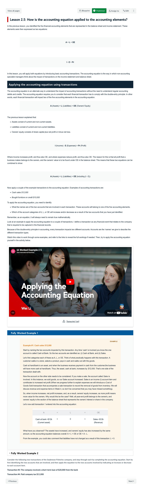
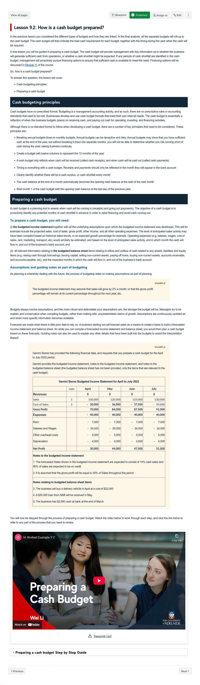
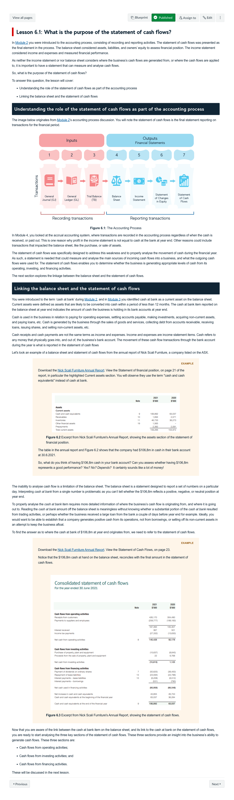
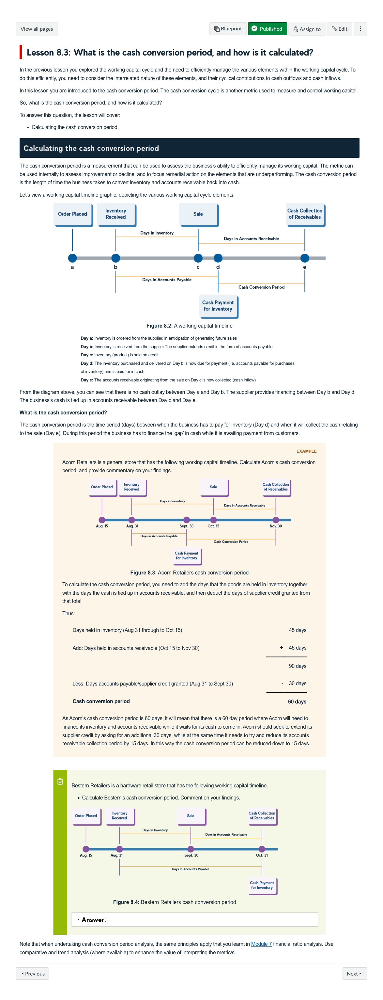

Course Description
The objective of the course is to provide an introductory knowledge of accounting to students of all disciplines such as business, professions, arts, engineering, health, medicine and sciences. A general overview of accounting principles relating to the preparation of financial and managerial reports will be presented. The primary focus is to illuminate how accounting information is utilised by a variety of stakeholders in planning, controlling and investing decisions.
Learning Outcomes
- Explain the key concepts that underpin the preparation of general-purpose financial statements.
- Analyse and interpret financial statements.
- Evaluate the accounting information needs of management.
- Understand and apply key principles of budgeting.
- Apply various management accounting techniques to analyse decisions faced by management
Learning Experience
Topics
- Introduction to Accounting
- The Accounting Process
- Balance Sheets
- Income Statements
- Accounting Equation Techniques
- Statements of Cash Flows
- Management Accounting
- Working Capital
- Budgeting
- Using Budgets to Monitor and Control Business Performance
- Sources of Financing
- Introduction to Performance Management
Development Team
-
Wei Li
Course Author
Colaborator
-
Anton Jordaan
Course Author
Lead
-
Kat Alchin
Learning Designer
Lead
Assessments
-
Quizzes
Multiple Choice Questions
These quizzes were aimed at providing learners with formative feedback by testing foundational knowledge at key points in the course. These points allowed learners to go back through the key concepts and identify areas where they need further revision.
5%
-
Financial Statement presentation and application
Report
This practical task requires learners to present an income statement and a balance sheet and use themto analyse how a series of transactions might impact the owner’s equity in a business.
30%
-
Financial statement analysis & presentation
Case Study
Learners are asked to select two publicly listed companies and review their annual financial statements to determine the financial health of the companies. They use financial tools and techniques to analyse, assess, and interpret financial data to make a final investment recommendation.
30%
-
Budgeting and breakeven analysis
Model,Media Task
Learners are asked to apply management accounting techniques to develop a Cash Budget that assists managers in decision-making. They are then asked to prepare short video where they talk through their calculations and suggestions they've made to make recommendations regarding appropriate funding options.
35%
Snapshots
-

-

Overhauled lesson by including demonstration videos, including accessible versions of the process outlined in the video. " onclick="openSnapshot(this)" > -

overhauled lesson by including demonstration videos, including accessible versions of the process outlined in the video " onclick="openSnapshot(this)" > -

overhauled the explanation so that graphic illustrations could be co-designed, further additions were made for user experinece including embedding the use of a case study into the learning activity with optional external link " onclick="openSnapshot(this)" > -

complex demonstration of cash flow budgeting concept, including several worked examples, as well as opportunity for student to attempt to calculate on their own and then compare their answer. " onclick="openSnapshot(this)" >
Learning Resources
-
Worked Example
A worked example of the application of the accounting equation and the impact of different types of transactions on the balance sheet and income statement.